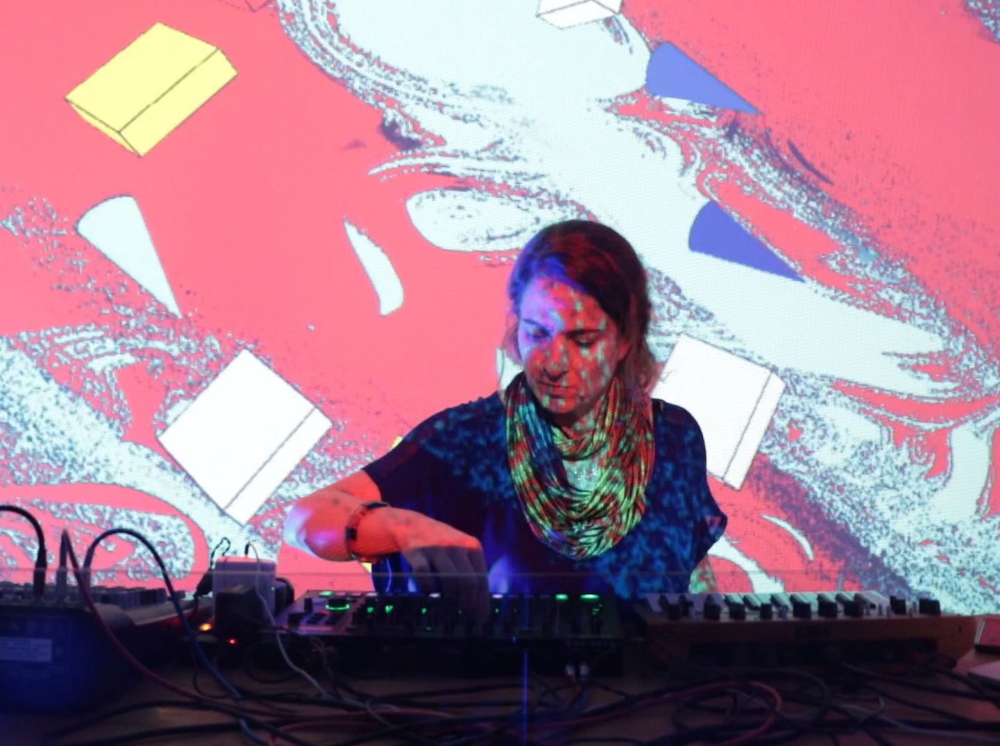

17 de agosto: Taller de Procesing p5.js por Ivy Feraco (Unjust)
p5.js es una librería que ayuda hacer animaciones con el canvas elemento de manera interactiva. En el fondo, es javascript que corre en el navegador, y por eso puede también trabajar con otros APIs Web. Tiene plugins de sonido, data, y visualizaciones gráficas.
En este taller, vamos a explorar p5.js para dibujar en el navegador y algunas técnicas para interactuar con el sonido.
Requisitos:
- Entendimiento de conceptos básicos de programación (variables, condicionales, funciones), y la habilidad para escribirlo. No tiene que ser necesariamente javascript ni tener un nivel avanzado. Puedes revisar recursos tipo http://es.javascript.info, w3schools javascript, Mozilla para familiarizarte si es nuevo para ti.
- Una pc/laptop con coneccion a internet y el editor https://editor.p5js.org
- Midi controller (opcional)
Este taller está dirigido a artistas escénicos y audiovisuales interesados en incorporar la programación en su práctica artística, musicos, VJS, publico interesado en expandir sus posibilidades creativas desde el enfoque interdisciplinario
- Inscripciones abiertas:
- hasta el 10 de agosto 2022
- link de inscripción:
- https://forms.gle/qnbBYUeUxWmkaZ4X9
- Fechas del taller:
- 1 de agosto 2022
- Horario:
- 5:00 a 7:00 pm
- Cupo:
- 15 participantes seleccionados que seran notificados por email
Taller gratuito online via plataforma Jitsi
Tallerista: Ivy Feraco es una programadora y artista de EEUU que se graduó en el programa de Arte y Tecnología en Parsons New School, y ahora vive en Lima. Ella escribe código en javascript usando bibliotecas como p5.js para crear animaciones interactivas y responsivas. Actualemente ayuda en un bootcamp de tecnología web en Laboratoria.